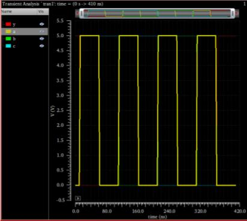
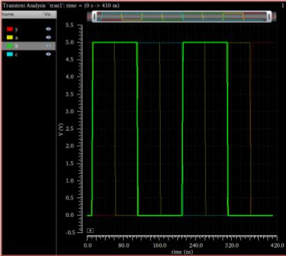
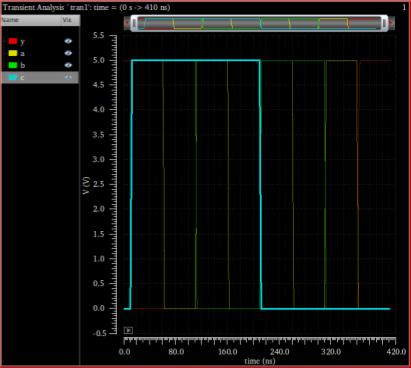
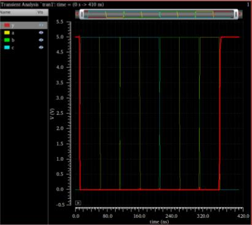

This assignment included assembling and wiring the pull-up and pull-down networks of a NAND and NOR circuit with input and output pins for transient analysis.
Transistor-level schematic of 2-input NAND circuit.
Transistor-level schematic of 3-input NOR circuit.
The circuit was then analyzed using Spectre simulation software within Cadence Virtuoso. Three inputs a, b, and c were simulated. The output, y (in red), is shown to be HIGH only when all three inputs are LOW. Therefore the NOR circuit functions as intended.
   Transient analysis of 3-input NOR circuit with inputs a, b, and c with output y.